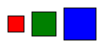
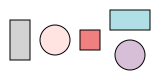
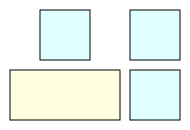
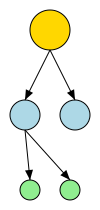

While you can position every shape manually using .translated(x, y), Tesserax shines when you let it handle the geometry for you. The layout system is built on a hierarchy of abstractions, starting from simple groups and moving up to force-directed graph algorithms.
Grouping Objects
The Group class is the fundamental unit of composition. It treats a collection of shapes as a single object, allowing you to transform them together.
The Context Manager Pattern
The most idiomatic way to create a group is with the with statement.
Code
from tesserax import Canvas, Group, Rect, Circle, Textfrom tesserax.color import Colorswith Canvas() as c:# A group acts as a local containerwith Group() as g: Rect(100, 100, fill=Colors.LightBlue) Text("Group 1")# You can transform the entire group at once g.translated(50, 50)with Group() as g2: Circle(30, fill=Colors.Salmon) g2.translated(150, 50)c.fit(10).display()
Manual Layouts: Align and Distribute
Before reaching for a full layout engine, you can often get what you need using the procedural API on Group.
.align(axis, anchor): Aligns all children along an axis relative to the first child.
.distribute(axis, gap, mode): Spaces children out evenly.
Code
from tesserax import Squarewith Canvas() as c:with Group() as g: Square(20, fill=Colors.Red) Square(30, fill=Colors.Green) Square(40, fill=Colors.Blue)# 1. Align centers vertically g.align("vertical", anchor="center")# 2. Distribute horizontally with 10px gap g.distribute("horizontal", gap=10) g.translated(50, 50)c.fit(10).display()

Standard Layouts
Standard layouts like Row and Column are specialized Groups that automatically apply alignment and distribution logic when they are closed.
Row and Column
These layouts are perfect for linear arrangements. They can be nested arbitrarily.
Code
from tesserax.layout import RowLayout, ColumnLayoutwith Canvas() as c:# A Row automatically distributes horizontallywith RowLayout(gap=10, align="middle") as row: Rect(20, 40, fill=Colors.LightGray) Circle(15, fill=Colors.MistyRose) Rect(20, 20, fill=Colors.LightCoral)# A Column automatically distributes vertically# Notice we can nest layoutswith ColumnLayout(gap=10, align="middle") as col: Rect(40, 20, fill=Colors.PowderBlue) Circle(15, fill=Colors.Thistle)c.fit(10).display()

The Grid Layout
The Grid layout provides a powerful 2D arrangement system. Unlike a simple HTML table, the Tesserax Grid allows for spanning and alignment control per cell.
Code
from tesserax.layout import GridLayoutwith Canvas() as c:# 2 columns, automatic rowswith GridLayout(cols=2, gap=10) as grid: Rect(50, 50, fill=Colors.LightCyan) Rect(50, 50, fill=Colors.LightCyan)# This will wrap to the next row Rect(110, 50, fill=Colors.LightYellow) # Span visually if wide Rect(50, 50, fill=Colors.LightCyan)c.fit(10).display()

Complex Layouts
For data structures where manual positioning is impossible (like graphs or trees), Tesserax provides algorithmic layouts.
Hierarchical Layout (Trees & DAGs)
The HierarchicalLayout is designed for directed acyclic graphs and trees. It automatically calculates levels and minimizes edge crossings.
Code
from tesserax.layout import HierarchicalLayoutfrom tesserax import Arrowwith Canvas() as c:with HierarchicalLayout(orientation="vertical") as tree: root = Circle(20, fill=Colors.Gold) l = Circle(15, fill=Colors.LightBlue) r = Circle(15, fill=Colors.LightBlue) ll = Circle(10, fill=Colors.LightGreen) lr = Circle(10, fill=Colors.LightGreen) tree.root(root) tree.connect(root, l) tree.connect(root, r) tree.connect(l, ll) tree.connect(l, lr)# Define connections (Layout will position nodes, you draw edges) Arrow(root.anchor("bottom"), l.anchor("top")) Arrow(root.anchor("bottom"), r.anchor("top")) Arrow(l.anchor("bottom"), ll.anchor("top")) Arrow(l.anchor("bottom"), lr.anchor("top"))c.fit(10).display()

Force-Directed Layout
The ForceLayout uses a physics simulation (Fruchterman-Reingold) to position nodes. This is ideal for arbitrary network graphs where structure is emergent.
The layout requires you to define nodes and links (edges).
Code
from tesserax.layout import ForceLayoutfrom tesserax import Line, Shapewith Canvas() as c: nodes: list[Shape] = []# 1. Initialize Layoutwith ForceLayout() as layout:# 2. Add Nodes (they are just shapes)for i inrange(5): n = Circle(10, fill=Colors.Orange) nodes.append(n) layout.add(n)# 3. Add Constraints (links) layout.connect(nodes[0], nodes[1]) layout.connect(nodes[1], nodes[2]) layout.connect(nodes[2], nodes[0]) # Triangle layout.connect(nodes[2], nodes[3]) layout.connect(nodes[3], nodes[4])# 5. Draw Edges based on computed positions# (We draw edges *after* compute so anchors are correct) Line(nodes[0].anchor("center"), nodes[1].anchor("center")) Line(nodes[1].anchor("center"), nodes[2].anchor("center")) Line(nodes[2].anchor("center"), nodes[0].anchor("center")) Line(nodes[2].anchor("center"), nodes[3].anchor("center")) Line(nodes[3].anchor("center"), nodes[4].anchor("center"))c.fit(10).display()